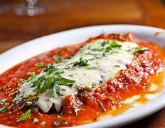

Filé à Parmegiana
Ingredientes
- 10 bifes de filé mignon
- 1 xícara de farinha de trigo
- 2 ovos
- 1 pitada de sal
- Farinha de rosca
- 1 lata de extrato de tomate
- 1 pitadinha de açúcar
- 10 fatias de mussarela
Modo de Preparo
- Corte o filé em bifes não muito finos e tempere-os a gosto.
- Passe os bifes na farinha de trigo.
- Bata ligeiramente os ovos com uma pitadinha de sal e passe os bifes nessa mistura.
- Passe os bifes na farinha de rosca, fazendo com que a massa fique bem aderida.
- Frite os bifes em óleo quente e deixe-os em papel toalha para que sequem bem.
- Montagem: Faça um molho com extrato de tomate e uma pitadinha de açúcar e coloque sobre os filés.
- Cubra-os com as fatias de mussarela e leve ao forno por aproximadamente 10 minutos para gratinar.
- Para acompanhar, sirva com batatas fritas bem douradas e arroz branco.